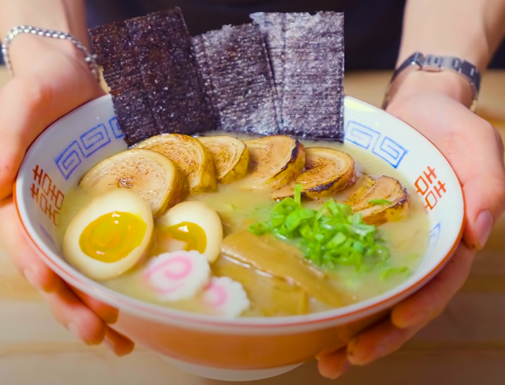

Naruto Ramen

Description
This recipe comes from Babish Culinary Universe
he is a youtuber that post different recipes. Now I'm going to be honest and say that I haven't made this dish right here but its definitely on my to eat list.
Ingredients
Noodles (makes 3-4 servings):
296g Bread flour
4g Vital Wheat Gluten
114g - 1 egg white + water
5g baked baking soda
3g kosher salt
Pinch of riboflavin
Miso Tare (way too much):
500g red miso blend
500g white miso blend
250g mugi miso
50ml Shoyu
50ml Sake
15ml Mirin
17.5g Grated ginger
25g Grated Garlic
2.5g Ichimi togarashi
2.5g sesame seeds
Tonkotsu soup:
1.5kg pork femur bones (cracked or cut)
600g chicken bones
300g chicken feet
300g pork fat (preferably fatback)
1 green onion
1/3 ginger sliced
1 head of garlic
1/3 of one carrot
1/3 of one onion
1/3 cabbage
1/3 of one apple
2/3 of one potato
Goyokai Dashi:
600ml water + 60g Niboshi
15g Konbu
1 dried shiitake
1.5L water
15g katsuobushi
Steps
Step 1 watch this video
VIDEO
Enjoy!